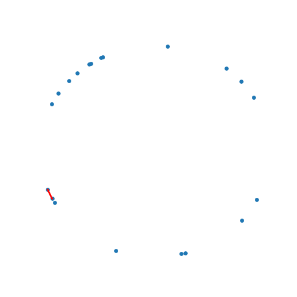

Graham Scan

Jarvis March

KirkPatrick-Siedel

Circle
Graham Scan

Jarvis March
KirkPatrick-Siedel

Random datapoints are generated using a python script and all the three algorithms are run. The running times are tabulated. below
| Input size | Jarvis March | Graham Scan | Kirk Patrick- Seidel |
|---|---|---|---|
| 10 | 9e-05s | 0.001035s | 0.00043s |
| 100 | 0.000344s | 0.006249s | 0.001129s |
| 1000 | 0.000697s | 0.095285s | 0.007289s |
| 10000 | 0.004021s | 1.58917s | 0.05352s |
| 100000 | 0.076825s | 34.4927s | 0.772348s |
Theoritical complexities of these algorithms are
where h is the number of points on the hull and n is the number of input points. The above rnning times are for random points on a plane. So, h << n and thus Jarvis March and Kirk Patrick - Seidel run faster
The above running times of the algorithms do not comply with these complexities accurately because the constants in the running time dominate. However, asymptotically the running times comply with the complexities.
All the points are on the hull implies n = h and hence Jarvis March's complexity becomes O(n^2) and Kirk Patrick - Siedel's becomes O(nlogn). To generate such datapoints, random points are sampled from a 2D circle.
| Input size | Jarvis March | Graham Scan | Kirk Patrick- Seidel |
|---|---|---|---|
| 10 | 0.000122s | 0.000758s | 0.00053s |
| 100 | 0.000544s | 0.012341s | 0.002113s |
| 1000 | 0.013926s | 0.130653s | 0.033391s |
| 10000 | 1.16117s | 1.90969s | 0.364094s |
| 100000 | 46.5338s | 35.916s | 8.70243s |
Jarvis March works best when the points are input in the order in which points on the hull come earlier.